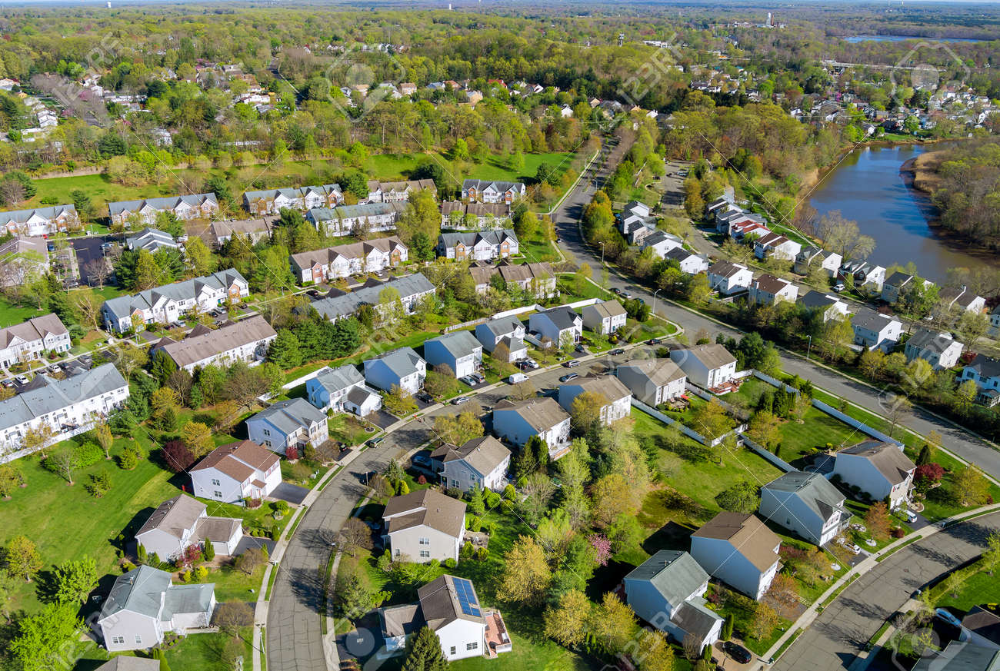

**Propiedades y Desarrollo de Bienes Raíces en Gotham y Más Allá**
Wayne Enterprises, a través de su división de Propiedades y Desarrollo de Bienes Raíces, lidera la transformación urbana en Gotham City y más allá, revitalizando comunidades mediante proyectos sostenibles e innovadores. Desde la modernización del distrito financiero hasta la creación de viviendas asequibles, nuestra misión es construir entornos que promuevan el crecimiento económico inclusivo y mejoren la calidad de vida. Trabajamos con expertos y autoridades locales para desarrollar infraestructuras que no solo embellecen el paisaje urbano, sino que también fortalecen a las comunidades, contribuyendo a un futuro más brillante para todos.
Proyectos
Torre Wayene North
View MoreTorre Wayne South
View More
